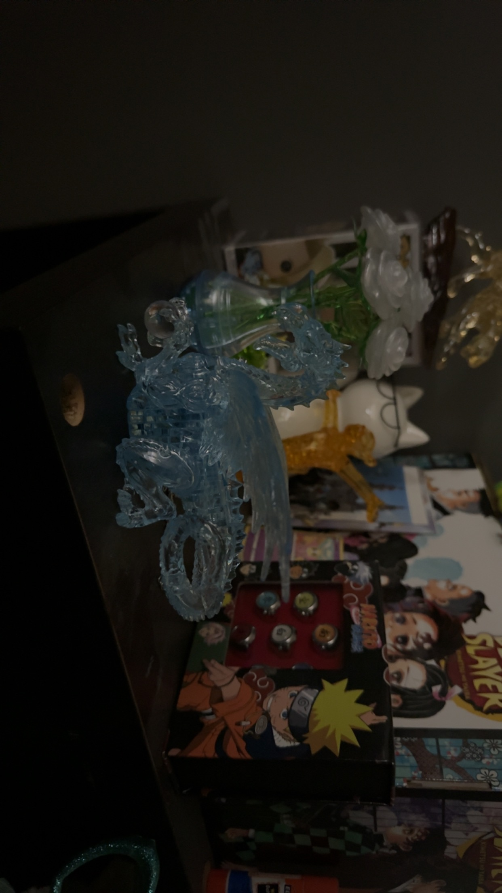

Things i would like to try
There are a lot of things i want to try out. Whenever i wander around on the internet or out in public i always see something or find something interesting. I see people perform, create, play, etc and it really makes me want to try to do somthing similar.One thing i really want to do is learn how to play another instrument. It seems fun but i cant decide with what instrument other than the piano. I would also like to do a puzzle with a lot of pieces. It sounds like a horrible idea but thats what makes me want to do it even more. The things i would like to do are usually the things that challenge me in a fun way like puzzles. I have been doing 3d crystal puzzles which are fun but they can be very challenging even with the instructions. crochet seems like another fun thing to do. I would like to start something like this in the winter because it just seems like a relaxing idea that i can do on my free time
 top